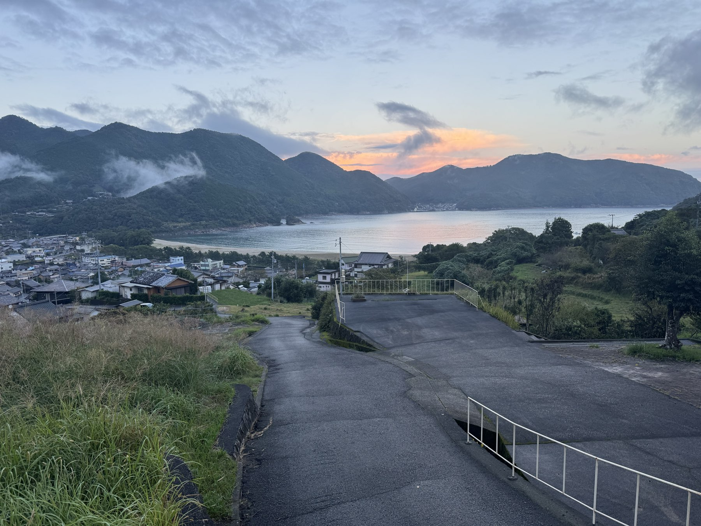
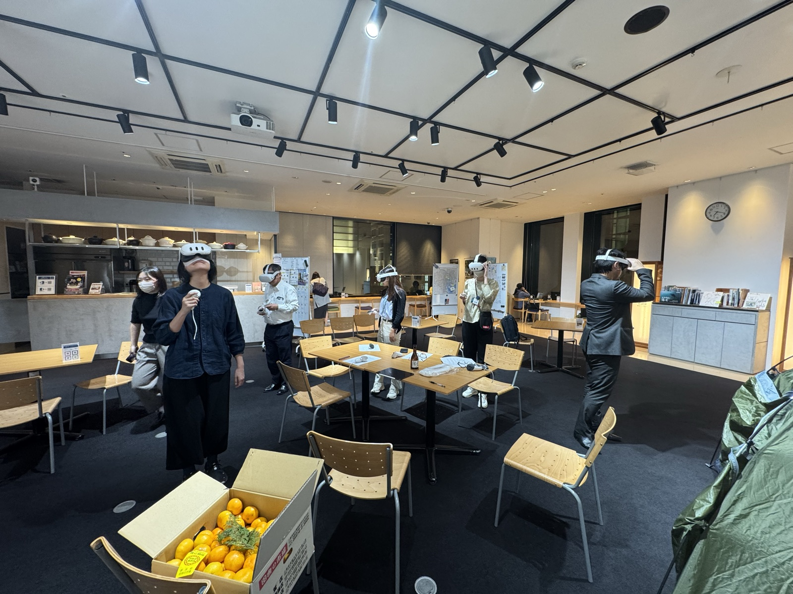

新鹿みらいのまちづくり 住民報告
学生とつくった新鹿のCM。VRで東京に届けた新鹿の景色。
この2年でいただいた、たくさんの声の報告です。
私たちが目指して
いること
いま多くの農村は、高齢化と人口減少のなかで、「地域の中の力だけ」では動きにくくなっています。かといって、外から出来合いの答えを持ち込めばうまくいく、というものでもない。私たちの研究室が考えてきたのは、その中間の道です。地域がもともと持っている力を、外の人とのつながりで補いながら、一緒に課題へ向き合い、新しいやり方を少しずつ編み出していく——そんな仕組みづくりです。
この「地域が主役、でも外の力もうまく借りる」という考え方は、研究の世界ではネオ内発的発展やソーシャル・イノベーションとも呼ばれています。新鹿でのこの2年は、その考え方を実地で試し、新しいやり方を探す取り組みでした。
2年間の全体像
新鹿は東京から5時間。気軽に来てもらえる距離ではありません。それなら、新鹿のほうを外へ届けられないか。この2年、私たちは新鹿のコンテンツを東京・日本橋のアンテナショップ「三重テラス」に届け、外の人から声をもらう、という試みを続けてきました。中身は進化しました——学生がつくったCMから、VRの映像へ。
三重大生18名が新鹿に来て、6本のPR動画を制作。公民館で上映し、東京の三重テラスでも放映しました。
新鹿の景色を360°映像に。三重テラスで体験してもらい、地域活性化のアイデアをいただきました。
共通の舞台は 三重テラス（東京・日本橋）。新鹿と都市をつなぐ“窓”として使いました。
第1弾
2024年10月
「あたしか×大学生 第1弾」。三重大学の学生18名が新鹿に泊まり込み、6つの班に分かれて、プロの動画ディレクターの指導のもと新鹿をPRするCMを制作しました。町案内も、民宿も、ジビエも、大仙寺でのBBQも——住民の皆さん約20名のご協力で実現した2日間です。完成したCMは公民館の上映会で「景観や人の温かさが伝わる」と評価され、地元紙（くろしお版・吉野熊野新聞）にも掲載されました。
▼ 完成した6本のCM（紀南地域のファンコミュニティ「紀南部」YouTubeチャンネルで公開中）
第1弾で
わかったこと
CMづくりには、もう一つのねらいがありました。来てくれた学生に、その後も新鹿と関わり続けてもらえないか——いわゆる関係人口の入口になってもらえないか、ということです。そこで、参加した学生のうち13人を1か月後まで追いかけ、「“また来たい”が、どうすれば“また来る”に変わるのか」を調べました。
全員が 6〜7 ／ 7点
参加した学生は全員が「満足」か「非常に満足」。当日の体験そのものは、文句なしでした。
13人中 4人
1か月後、再訪が現実的だと見立てられたのはこの人数。「また来たい」気持ちと、実際の再訪は、別物でした。
再訪を左右したのは満足度の高さではなく、もともと農村に関心があるかどうか。関心の高い人は、遠さのような壁も、自分で越えていく傾向がありました。
もう一つ。1か月のあいだに地域への関わりの意欲は全体に少し下がりましたが、SNSでの関わりが一番薄れやすく、「また会いに行きたい」という現地・対面の気持ちは、いちばん残りました。オンラインは便利ですが、軸になるのは“現地で会うこと”。SNSはそれを後押しする役回り、と言えそうです。
だからこそ、大事なのは「誰に届けるか」。来てくれた学生は、そのまま新鹿のファン＝関係人口の入口になりえます。農村に関心のある人に絞って、次に来る“きっかけ”を用意する——この発見は、最後のご提案につながっています。
第2弾
2025年10〜11月
新鹿の景色を全天球カメラで360°映像にして、三重テラスの来訪者に体験してもらいました。映像づくりも皆さんのご協力でできています——住民の“いちおしスポット”を募り、推薦した方ご本人のナレーションを、そのまま映像に入れています。
ピンをクリックすると、その場所のVR映像を開けます（地図：OpenStreetMap）。
▼ 三重テラスで体験してもらった、新鹿の6つの360°VR映像。住民の皆さんが選んだ“いちおし”の場所です（クリックで再生、スマホやマウスでぐりぐり見回せます）。
再生リスト全体：新鹿町VR（実験用）｜紀南部@三重テラス
三重テラスで
集まった声
三重テラスの来訪者からは、合わせて154ものアイデアが集まりました（喜田さんが「宝の山」と呼んでくださったものです）。これを新鹿に持ち帰り、皆さんに3段階で仕分けていただきました。「意外か（地域の中からは出ない発想か）」→「役に立つか」→「実現できそうか」。くぐり抜けたのは40件、およそ4分の1です。

約4分の1のアイデアが「意外で、役に立ち、実現できそう」と選ばれました
数字は「集まった数 → そのうち残った数」。受け入れる環境、外の人とのつながり、景色の見せ方に、関心が集まりました。
※ ここでは住民が選んだ40件を掲載しています。元の声をふくむ全154件は、上の「集まった全154件を見る」からご覧いただけます。
2年で
わかったこと
新鹿と東京をつなぐ拠点として、外の人に届け、声をもらう往復が成立しました。
VR 19.6% ／ 2D 0%
新鹿を知らない人でも、VRで場所が分かると、地域に選ばれるアイデアを出せました。鍵は没入感より「場所が分かること」。
外の視点が“驚き”を持ち込み、それが地域で“使えるか”を判断できるのは住民の皆さんだけ。この組み合わせが効きました。
新鹿への
ご提案
冒頭でお話しした「地域の力を、外とのつながりで補い合う」。これを、一回きりの取り組みで終わらせないことが、ひとつの鍵になります。外から刺激が届き、地域でそれを“題材”に考え、新しいかたちで発信し、また声が返ってくる。この輪が回りつづけるほど、情報と知恵が新鹿の内と外をめぐり、新鹿が進むべき方向と、その方法が、だんだん形になっていきます。
この輪が回りつづけるほど、新鹿が進むべき方向と、そのための方法が、はっきりしていきます。
この輪のなかで、AIは2か所で力になります。集まった声を整理して住民の“たたき台”をつくる（②考える側）。そして、地域の見せ方そのものを新しくする（③見せる側）。たとえば——
360°映像や写真から、新鹿の集落・海岸をAIで3D空間化。スマホやブラウザで自由に歩き回れる体験へ。
昔の新鹿の写真をAIで動かし、「30年前の新鹿」を映像でよみがえらせる。古老の語りのアーカイブとも相性◎。
※ 住民評価でも「過去の姿をVRで」「古老の語りをアーカイブ」という声が出ていました。これらの構想は、その延長線上にあります。